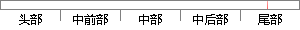

优先级为5和6的两个任务，当系统时钟节拍为20时，删除优先级为6的任务，代码如下：
片段位置图

相似结果
相似片段：但是该系统存在两个突出的问题,第一是可靠性问题,...中断进出的前导、时钟节拍、任务调度、事件处理等多...它的优先级为次低,该任务负责统计当前CPU的利用率...
| 标题 | 《基于Web的低成本远程监控网络设计与应用》 |
| 对比库 | 中国学位论文全文数据库 |
| 作者 | 邓威威 |
| 机构 | 浙江大学 |
| 分类 | 电气工程 |
| 年份 | 2012 |
| 相似率 | 66.67% （轻度抄袭） |
※ 片段修改建议 ※
近似词参考：- 节拍：节奏
- 如下：以下
- 系统：体系
- 任务：使命 义务
系统自动生成语句：优先级为5和6的两个使命，当体系时钟节奏为20时，删除优先级为6的使命，代码以下：
注：本片段修改建议为系统自动生成，仅供参考。